slow or fast, reversible or irreversible
physical and chemical changes
desirable or undesirable, natural or human made
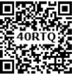
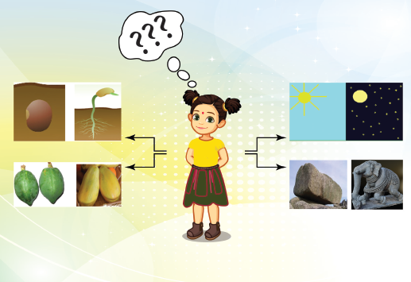
Observe the pictures in the previous page and fill in the gaps.
Initial stage Seed |
Changing stage Sapling |
Initial stage dash |
Changing stage Night |
Initial stage Rock |
Changing stage dash |
Initial stage raw fruit |
Changing stage dash |
What is common in all the above pairs?
dash
What is a change? dash
The process in which something becomes different from what it was earlier? It is the observable difference between initial state and the final state of any substance.
Change is the law of nature. In our day - to - day life we see many changes around us. Weather changes periodically (daily or seasonally), season change periodically. A paper burns readily while it takes a few days for an iron nail to rust. It takes a few hours for milk to turn into curd but vegetables get softened in a few minutes when cooked.
The what happens during a change? The above said changes are accompanied by change in the properties like shape, colour, temperature, position and composition. Some changes can be observed while some are not possible to notice.
Can you list some of the changes that you have observed in your daily life?
Activity 1: What happens when you blow air into a balloon?
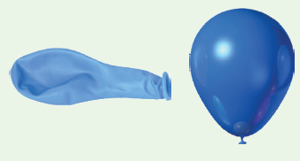
Is there any change in size? Yes OR No
Is there any change in shape? Yes OR No
Is there any other change? Dash
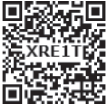
There are different types of changes that occur around us. Some changes take place very quickly while others take hours, days or even years. Some changes are temporary while some are permanent. Some changes produce new substances while others do not. Some changes are natural while others are made by human beings. Some changes are desirable to us but some changes are not desirable.
We shall now try to classify changes on the basis of certain similarities and differences.
Activity 2: Look at the pictures and discuss about the duration for the changes to take place.
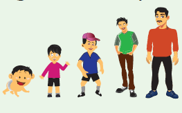
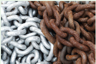
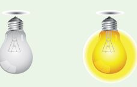
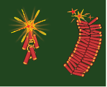
Slow changes
Changes which take place over a long period of time (hours or days or months or years) are known as slow changes.
Examples: growth of nail and hair, change of seasons, germination of seed.
Fast Changes
Changes which take place within a short period of time (seconds or minutes) are known as fast changes.
Examples: Bursting of balloon, breaking of glass, bursting of fire crackers, burning of paper.
Reversible change
Changes which can be reversed (to get back the original state) are known as reversible changes.
Examples: Touch me not plant (Responding to touch), stretching of rubber band, melting of ice.
Touch me not plant
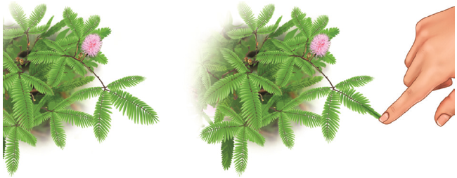
Activity 3: Try to make a boat and an aeroplane one by one using the same piece of paper. This means the change of shape discussed here is reversible.
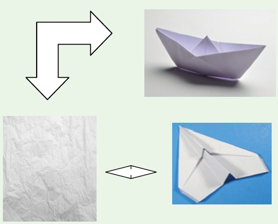
Irreversible change
Changes which cannot be reversed or to get back the original state are known as irreversible changes.
Activity 4: What kind of changes are they?
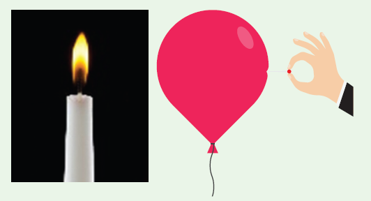
a) Burning of a candle. Dash
b) Piercing a balloon with a pin. Dash
Examples: Change of milk into curd, digestion of food, making idly from batter.
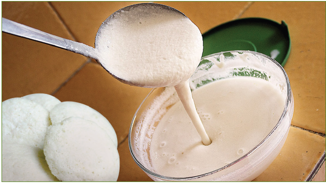
Physical changes
Activity 5: Take an apple and cut it into two halves. Cut one half into
pieces and share it with your friends.
Is there any change in the composition of the apple while cutting?
No, only the shape and size have changed. This can be called a physical change.
Leave the other half on the table for some time. You can see brown patches formed on the cut surface because of the reaction between some substances in the apple and the air around it. This is a chemical change.
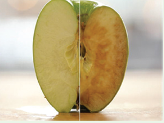
Physical changes are the temporary changes in which there is change in the physical appearance or physical state of the substance but not in its chemical composition. Here no new substance is formed.
Example: Melting of ice, the solution of salt or sugar, stretching of rubber band.
Let us now understand the physical changes that take place in water. You already know that water exists in three states as solid, liquid and gas. Change of state takes place either by heating or cooling. By heating energy is supplied and by cooling energy is taken away. These are the reasons for the changes.
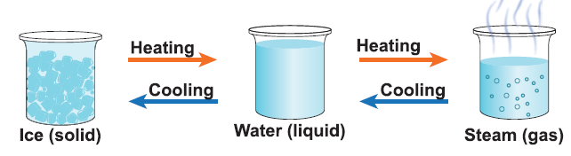
Let us name a few processes connected with the changes in states of water.
Change ice into water on heating |
Process melting |
Change water into steam on heating |
Process vapourisation |
Change steam into water on cooling
|
Process condensation |
Change water into ice on cooling
|
Process freezing |
More to Know
The change of state from solid to gas directly is called sublimation.
Example: Camphor
Let us understand one more physical change
Dissolution
The spreading of the solid particles (broken into individual molecules) among the liquid molecules is called as dissolution.
1. Water is known as the universal solvent. It dissolves a wide range of substance.
Activity 6: Take half a cup of water, add one spoon full of sugar and stir well.
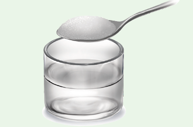
a. What do you observe? Dash
b. What happened to the sugar? Dash
c. Where is it gone? Dash
d. The solute in the above solution is Dash
e. The solvent in the above solution is Dash
f. Have you seen a glass of water and a glass of sugar solution looking alike? Dash
Chemical changes
Chemical changes are the permanent changes in which there is a change in the chemical composition and new substance is formed.
Examples: Burning of wood, popping of popcorn, blackening of silver ornaments, and Rusting of iron.
Physical Change No new substance formed in this change. |
Chemical Change New substance formed in this change. |
Physical Change No change in the chemical composition. |
Chemical Change There a is change in the chemical composition. |
Physical Change It is a temporary change. |
Chemical Change It is a permanent change. |
Physical Change It is reversible. |
Chemical Change It is irreversible. |
Activity 7: Look at the pictures and write whether they are physical or chemical changes.
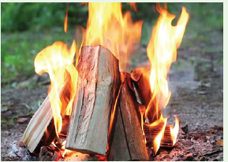
dash
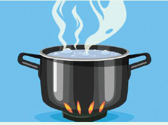
Dash
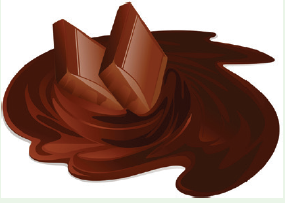
Dash
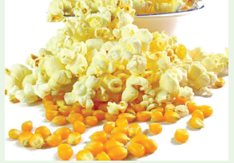
Dash
Desirable changes
Activity 8: Look at the pictures and write whether they are desirable or undesirable changes.
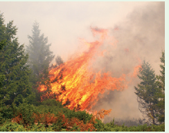
Dash
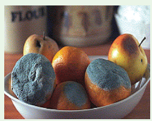
Dash
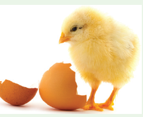
Dash
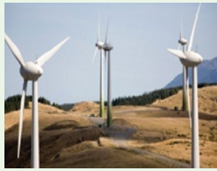
Dash
The changes which are useful, not harmful to our environment and desired by us are known as desirable changes.
Examples: Ripening of fruit, growth of plants, cooking of food, milk changing to curd.
Undesirable changes
The changes which are harmful to our environment and not desired by us are
known as undesirable changes.
Examples: Deforestation, decaying of fruit, rusting of iron.
Activity 9: Identify the type of changes
Natural or Human made
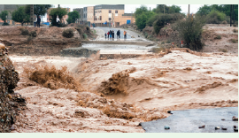
Dash
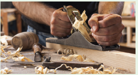
Dash
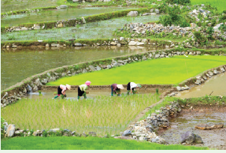
Dash
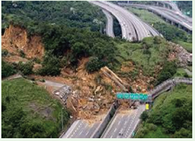
Dash